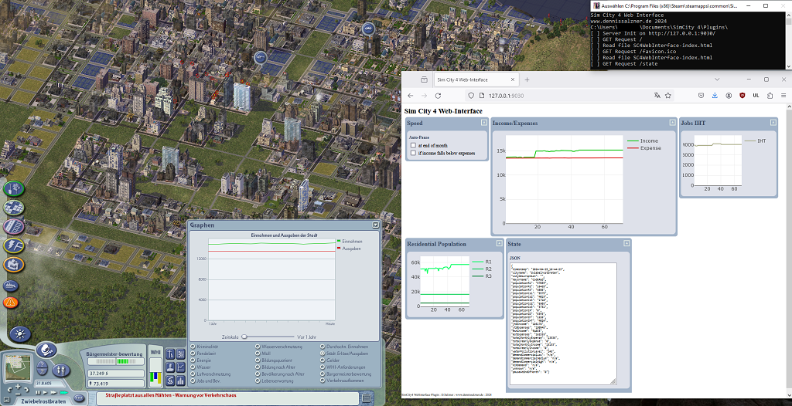
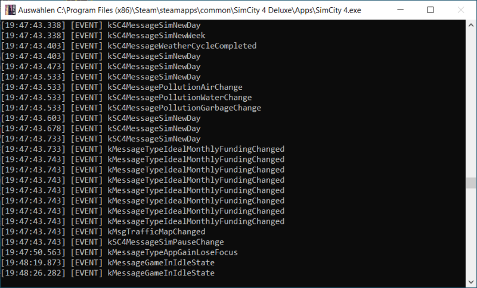

What
Most would agree that Sim City 4 is by far the best city-building simulation game. It’s a 20 year old game that hasn’t received any updates since. But recently there have been significant advancements in plug-in development for the game. I’ve written a plug-in for Sim City 4 that allows viewing game metrics in a web browser. The web browser can run on a secondary monitor, smart phone or tablet. This adds basic second-screen/multi-monitor capabilities to the game.
The plug-in source-code and pre-compiled *.dll is available on GitHub (see GitHub simcity4-webinterface-plugin).
Contents
When
Beginnings
For the longest time the closest I could find online regarding plug-in development was the “gzcom-dll” GitHub-Repo [1]. The repo contains the “Extra Cheats DLL”, an example that shows how plug-ins for the game could be written such that the game can successfully load them.
It was a good first step, but required significant further reverse engineering of the game. If you look at the Git commit history you’ll find that up until recently there were only commits up to March of 2018 - 6 years ago.
But since last winter a lot has happened and we may now have all information available to (more easily) write plug-ins for the game.
Why
Goal
So why write plug-ins for this 20 year old game? One feature I’d be very interested in would be the ability to somehow use multiple monitors.
One key aspect of the game is to continuously monitoring the in-game metrics.
If these metrics like available electricity, water, RCI demand, budget significantly drop the player has to intervene. Otherwise the Sims will flee the city, tax income will depleat and the city will spiral out of control. An configurable automation that can pause the game would be nice.
The game only supports viewing on graph at a time. If we could run an in-game web server that extracts these metrics and provides a web page with all the metrics we could view them on a second monitor or even a smartphone.
In recent years, with limited information on the internals of the game and limited time, I didn’t get around to developing this. The recent code on GitHub could make developing such a plug-in much more feasible.
Background
Research
A lot has been found out in a large effort on Sim City 4 forums by modders. We can use the information that is now available to write our own plug-in.
Modding Activity
Recently there has been a lot of activity in the Sim City 4 modding community. We can learn a lot from the recently published source codes.
| GitHub-Repo | Last Update (as of writing) | Description |
|---|---|---|
| nsgomez/gzcom-dll | Mar 28, 2018, then Mar 24, 2024 | Plug-in *.dll that is loadable by the game |
| 0xC0000054/sc4-add-new-ordinances | Jan 8, 2024 | Adds new Ordinances |
| 0xC0000054/sc4-cpu-options | Mar 12, 2024 | Multi-Core Support |
| 0xC0000054/sc4-ghidra-symbols | Apr 3, 2024 | Debug Symbolds for Ghidra reverse engineering tool |
| 0xC0000054/sc4-full-screen-32-bit | Mar 12, 2024 | DirectX full screen mode with 32-bit color |
| 0xC0000054/sc4-more-building-styles | Mar 12, 2024 | Add building styles |
| Killeroo/SC4MessageViewer | Nov 16, 2023 | Display in-game messages |
| Killeroo/SC4Parser | Mar 11, 2023 | Parsing “Maxis Database Packed Files (DBPF)” game files |
| Killeroo/SC4Cartographer | Jan 4, 2024 | Generate Maps from the Game |
| memo33/sc4-3d-camera-dll | Apr 1, 2024 | Change the camera angles |
| NAMTeam/nam-dll | Feb 27, 2024 | Improvements for Network Addon Mod |
| 0xC0000054/sc4-gzids | Mar 30, 2024 | List of Class IDs (GZID) |
| 0xC0000054/sc4-resource-loading-hooks | Mar 12, 2024 | Modify resources as the game loads them |
| 0xC0000054/sc4-exemplar-load-logging | Mar 15, 2024 | Extra logging for resource loading |
| ChrisNonyminus/TS-DLL | Jan 19, 2023 | GzCom for The Sims 2 |
| Songg45/gzcom-dll-test | Feb 24, 2024 | Fork of GzCom |
| Kopachris/SC4-gzcom | Oct 18, 2022 | Fork of GzCom |
Class IDs
I had already found out some years ago that the game seems to run on a publish/subscriber or observer pattern architecture. Game objects send “messages”. Oftentimes so many messages that the game stutters and crashes.
There’s a plug-in [9] available on GitHub that opens a console from the game and shows these messages.
The messages are sent from classes. The reverse engineering effort is in decoding the class ids [2] and understanding their contents. There are lots of them.
an enumeration of all known class IDs in SC4.
[...]
A list of all known engine class IDs (GZCLSIDs)
[...]
class GZCLSID {
public:
static const int32_t kGZWinFlatRect = 0xc2afa76e;
static const int32_t kcGZBuffer = 0x0C470D325;
static const int32_t kcGZDrawContext = 0x0AE6320E;
static const int32_t kcGZDrawContextAsBuffer = 0x0AB300B20;
static const int32_t kcGZDrawFontRenderer = 0x8B3255F9;
static const int32_t kcGZDrawSystem = 0x0AB2EA3AA;
static const int32_t kcGZLuaScriptServer = 0x0CBD101A9;
static const int32_t kcGZMessageQueueManager2 = 0x452294DF;
[..]
Component Object Model (COM)
Similarly to Windows COM, “Object Linking and Embedding” (OLE), “OLE custom controls” (OCX, a *.dll that supports OLE), ActiveX (the whole OLE/OCX thing for Webpages with DCOM) and “Distributed Component Object Model” (DCOM) Sim City 4 uses a Component Object Model internally.
Essentially this means the game is heavily object-oriented, uses a common base class and each class has a UUID. The goal is to have bindings for many languages and be able to reuse components across applications and in some cases even remotely.
In Sim City 4 [3] it’s called GZCOM (Gonzo COM) and the “GZCOM Framework” [4] coordinates between the objects and allows setting hooks.
class cIGZUnknown {
public:
virtual bool QueryInterface(uint32_t riid, void** ppvObj) = 0;
virtual uint32_t AddRef(void) = 0;
virtual uint32_t Release(void) = 0;
};
Plan
The pieces I need for the Sim City 4 Rest-API Plug-In are the following:
- Server - a small TCP-Server that responds to HTTP-GET-Requests, can respons to requests by sending JSON and HTML files
- Sim City 4 GZCOM interfaces - for getting the in-game state and controlling play/pause
- Data model - a simple extensible JSON serialisation of the in-game state (city name, population, available power, time, …)
- Frontend Page - an HTML page that auto-refreshes the JSON data and displays the information
With that we could point a web browser to the TCP server the Plug-In will start and see the Frontend-Page that will display in-game stats and allow to play and pause the game. The can then also be automated to pause the game when the population drops by say 10%, so the player can intervene.
Server
For the server and as we’ll be on Windows, we’ll need to use Winsock. It’s been a while. Last I used Winsock was on Visual Basic 6.0 via the OCX component. There’s good example code on the web [5].
#include <winsock2.h>
#pragma comment (lib, "Ws2_32.lib")
[..]
WSADATA wsaData;
iResult = WSAStartup(MAKEWORD(2,2), &wsaData);
[..]
ListenSocket = socket(result->ai_family, result->ai_socktype, result->ai_protocol);
[..]
iResult = bind( ListenSocket, result->ai_addr, (int)result->ai_addrlen);
iResult = listen(ListenSocket, SOMAXCONN);
[..]
ClientSocket = accept(ListenSocket, NULL, NULL); // block until connection
[..]
do {
[..]
iResult = recv(ClientSocket, recvbuf, recvbuflen, 0);
iSendResult = send( ClientSocket, recvbuf, iResult, 0 );
[..]
What I don’t like about this is that it can handle only one simultaneous connection, but if we code it robust enough to reopen after close and the web browsers behave nicely and close the connection, we it could be good enough for a start and save us from having to implement a more complex threading model.
GZCOM interfaces
Some general information about the city can be queried from GZCOM’s cISC4City [11]. This will give us:
virtual bool GetCityName(cIGZString& szPath) = 0;
virtual bool GetMayorName(cIGZString& szName) = 0;
virtual bool GetCityDescription(cIGZString& szDescription) = 0;
For the interface we can have a look at the “legalize gambling ordinance” plug-in [8].
const float lowWealthPopulation = GetCityPopulation(0x1011);
const float medWealthPopulation = GetCityPopulation(0x1021);
const float highWealthPopulation = GetCityPopulation(0x1031);
float GetCityPopulation(uint32_t groupID) {
constexpr uint32_t cityCensusIndex = 0;
const cISC4Demand* demand = pDemandSimulator->GetDemand(groupID, cityCensusIndex);
value = demand->QuerySupplyValue();
}
The city finances can be queried from GZCOM’s cISC4Simulator
virtual int64_t GetYTDIncome(void) = 0;
virtual int64_t GetEstIncome(void) = 0;
virtual int64_t GetYTDExpenses(void) = 0;
virtual int64_t GetEstExpenses(void) = 0;
virtual uint32_t GetTotalMonthlyExpense(void) = 0;
virtual int64_t GetTotalYearlyExpense(void) = 0;
virtual int32_t GetTotalMonthlyIncome(void) = 0;
virtual int64_t GetTotalYearlyIncome(void) = 0;
There’s also a message ID we might have to subscribe to
kSC4MessageFundsChanged = 0x772FAD4,
I also want to have console window instead of silent logging to a file, for this we can have a look at the “message viewer” plug-in [9] - the console logger class is exactly what we need [10]. It uses relatively simple Windows API calls.
AllocConsole
GetConsoleScreenBufferInfo(hConsoleOutput, &sbiConsoleInfo)
hConsoleOutput = GetStdHandle(STD_OUTPUT_HANDLE);
WriteFile(hConsoleOutput, message->c_str(), length, NULL, NULL);
For the game play/pause state there are functions in GZCOM’s cISC4Simulator [12]
virtual bool Pause(void) = 0;
virtual bool IsPaused(void) = 0;
Data Model
As for the data model I want to keep things as simple as possible and build something similar to a REST-API.
To get the in-game state we’ll do
http://127.0.0.1:6043/state
and get something like
{
"state" : "paused",
"demand_city_population_low_wealth" : "10000",
"demand_city_population_mid_wealth" : "8000",
"demand_city_population_high_wealth" : "2000",
}
Additionally there will be a call to play and pause the game
http://127.0.0.1:6043/pause
http://127.0.0.1:6043/play
Frontend
With that we can build a simple HTML frontend. In HTML/jQuery [6] we can do something like this:
$("button").click(function(){
$.getJSON("state", function(result){
$.each(result, function(i, field){
$("div").append(field + " ");
});
});
});
Of course we can then build on that and use something like d3.js to draw nice charts [7].
How
Implementation
With that vague plan of where we want to go we can start implementing.
Build an existing plug-in
To get started it makes sense to take any existing plug-in project and try to build and run that first.
Get the Code
To get started I’ve downloaded the legalize gambling ordinance upgrade plug-in from 0xC0000054 [13].
Install Visual Studio
It’s configured for VisualStudioVersion = 17.8 according to the *.sln so that’s what I downloaded.
Visual Studio 2022 Community Edition is available for free [14].
Setup Boost
It requires the boost libraries otherwise an include #include "boost/property_tree/ptree.hpp" will be missing.
So we get that
wget https://boostorg.jfrog.io/artifactory/main/release/1.84.0/source/boost_1_84_0.zip -OutFile boost_1_84_0.zip
and extract it.
Add-Type -Assembly "System.IO.Compression.Filesystem"
[System.IO.Compression.ZipFile]::ExtractToDirectory(".\boost_1_84_0.zip", "boost_1_84_0")
(Expand-Archive .\boost_1_84_0.zip -DestinationPath boost_1_84_0 is awefully slow)
Note that I was able to get rid of “Boost” and the “Windows Implementation Layer” later on during development.
Add Include Path
Set the inlude path in Visual Studio by the Solution Explorer Pane, Configuration Properties > C/C++ > General > Additional Include Directories
Configure Post-Build Copy
There’s an xcopy with a wrong directory Post-Build Command configured, so we change that to
xcopy "$(TargetPath)" "C:\Users\<username>\Documents\SimCity 4\Plugins" /y
Setup Windowed Mode
To get Sim City to run in windowed mode we can set “-w” in the Sream Options.
Plug-In config file
This particular plug-in requires copying SC4LegalizeGamblingUpgrade.ini to the plug-in directory, as the log file will tell you
"SC4LegalizeGamblingUpgrade v1.0.0
15:01:57 Failed top open the settings file."
Try it
With this plug-in the gambling ordinance will vary by the population instead of constant 150$ or so. You can see this in the Budget window in the game.
Adapt
With that we have a plug-in that properly loads that we can adapt for our needs.
Try adding some extra logging
With this plug-in the GetCurrentMonthlyIncome() function gets called frequently, so we can add additional logging.
int64_t LegalizeGamblingOrdinanceUpgrade::GetCurrentMonthlyIncome() {
Logger& logger = Logger::GetInstance();
logger.WriteLine(LogOptions::Errors, "GetCurrentMonthlyIncome");
and verify it shows up in the log file.
Log the city name
More interestingly lets get the name of the city. This involves handling strings.
cISC4AppPtr pSC4App;
if (pSC4App) {
cISC4City* pCity = pSC4App->GetCity();
if (pCity) {
cRZBaseString tmp;
// -- set city name
pCity->GetCityName(tmp);
logMessage("[I] CityName: " + String(tmp.ToChar()));
m_state->setEntry("cityName", tmp.ToChar());
With COM we need to first instantiate an empty cRZBaseString-class and pass it into the Getter-Functions where it will be overwritten with the actual content
Implement the Web-Server
I’ve briefly considered developing the Webserver from scratch, but in between I was working on an ESP-8266 electronics project and it has a very nice built-in Web-Server. The only work the developer has to do is setup a request_handler function.
While we can’t use that diretly in a desktop application I’ve found libmicrohttpd [15].
So as the next step I wrote a standalone Linux Web Server using libmicrohttpd, based on their minimal_server.c example code and hosted JSON and an HTML page.
JSON Key-Value Store
I have a very minimalis JSON Key-Value store that I wrote a while ago for Arduino projects.
The interface has four functions:
String serializeToJson();void updateFromJson(String data);String getEntry(String key);void setEntry(String key, String value);
With this we can have the game plug-in writing values with setEntry and the Webserver using serializeToJson upon Web-Requests to the URL /state. Exactly what we need.
Putting it all together
From there I’ve switched to the code from Killeroo/SC4MessageViewer and quickly had the Sim City 4 plug-in running and printing the city name to the console.
Next I had to get that adapted libhttpmicroserver minimal_server.c code I had written on Linux running on Windows in Visual Studio.
After struggles I decided to just copy out the portions of libhttpmicroserver directly into a fresh Visual Studio 2022 project avoiding the complex project configuration, *.dll configuration and the usual Visual Studio project setup issues. Doing this I setup the file paths in the Visual Studio project configuration *.vcxproj with a text editor. To build it I use the developer command prompt with msbuild .\SC4WebInterface.sln avoiding the Visual Studio IDE. This gave me enough control over the library and header paths to actually fix the issues.
Winsock Hell
With Winsock you always have to watch out to #define WIN32_LEAN_AND_MEAN maintain an exact order of #include <windows.h>, #include <winsock2.h>, #include <ws2tcpip.h> and the library #pragma comment(lib, "Ws2_32.lib"), because there are two incompatible implementations in Windows (yields redefinition errors) and somehow it always goes wrong at first. It gets even more tricky when you’re mixing C and C++ code, building a portion in a library and have to deal with Visual Studio at the same time.
Plug-In Path, Unicode Directory Paths
One interesting thing I encountered was getting the path of the *.dll and not that of SimCity4.exe, which loads the *.dll.
This can be done with the “Windows Implementation Layer” as other Plug-Ins do, but I wanted a more lean approach.
For this I ended up using the Windows API GetModuleHandleExW directly and going though the hassle of codecvt_utf8 converting the wide string to string and to c_str. Probably there will be encoding issues with foreign langauges, but I don’t think unicode chars are in use with these paths.
Progress
Conclusion
The C/C++ portion of the plug-in is mostly completed.
Next steps would be to:
- add more metrics
- enhance the interface page. The JSON could be shown as a table and live graphs would be nice.
- for this allow the web server to grab more files than just the index page.
- fix the play/pause behaviour. Pausing doesn’t work reliable. Perhaps we need to set the speed instead.
I’ve uploaded all the code an a precompiled release to GitHub. See GitHub simcity4-webinterface-plugin.
1] https://github.com/nsgomez/gzcom-dll 2] https://github.com/nsgomez/gzcom-dll/blob/804a52ef12c3bbb1b19bbdc6216ac08ddb274ae3/gzcom-dll/include/GZCLSIDDefs.h 3] https://github.com/nsgomez/gzcom-dll/wiki/Component-Object-Model 4] https://github.com/nsgomez/gzcom-dll/wiki/GZCOM-Framework 5] https://learn.microsoft.com/en-us/windows/win32/winsock/complete-server-code 6] https://www.w3schools.com/jquery/ajax_getjson.asp 7] https://dev.to/mblayman/a-simple-d3-js-area-chart-4bkf 8] https://github.com/0xC0000054/sc4-legalize-gambling-ordinance-upgrade 9] https://github.com/Killeroo/SC4MessageViewer 10] https://github.com/Killeroo/SC4MessageViewer/blob/main/src/cConsoleLogger.cpp 11] https://github.com/nsgomez/gzcom-dll/blob/524e4e16871c967745691f4d87f530d77451d219/gzcom-dll/include/cISC4City.h 12] https://github.com/nsgomez/gzcom-dll/blob/524e4e16871c967745691f4d87f530d77451d219/gzcom-dll/include/cISC4Simulator.h 13] https://github.com/0xC0000054/sc4-legalize-gambling-ordinance-upgrade 14] https://visualstudio.microsoft.com/de/downloads/ 15] https://github.com/Karlson2k/libmicrohttpd